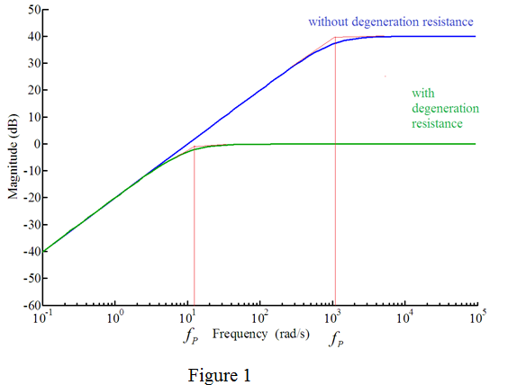

Step 1:
Refer to Figure P9.15 in the text book for the BJT common-emitter amplifier circuit.
Write the formula for emitter current, .
Here,  is the small signal emitter resistance
is the small signal emitter resistance
The output voltage, is,
Here,  is the collector current.
is the collector current.
The collector current, is equal to the emitter current, since .
Thus,
Determine the voltage gain,  .
.
Substitute for  .
.
Thus, the small signal voltage gain, is .
Step 2:
Consider the voltage gain formula,
Split the term into two terms.
Here,  is the midband gain of the amplifier.
is the midband gain of the amplifier.
Thus, voltage gain becomes:
Thus, the midband gain of the amplifier is .
Step 3:
Consider the second term in the formula for is,

The lower 3-dB frequency is,
Thus, the lower 3-dB frequency, is .
Step 4:
(b)
Write the expression for the small signal voltage gain without the emitter degeneration resistance, .
.
Split the term into two terms.
The mid-band gain is.
The mid-band gain with emitter degeneration resistance is .
The reduction factor of mid-band gain is,
Therefore, the factor by which the mid-band gain is reduced because of including emitter degeneration resistance is .
Step 5:
(c)
Write the expression for the small signal voltage gain without the emitter degeneration resistance,  .
.
Split the term into two terms.
Step 6:
The lower 3-dB frequency is,
The lower 3-dB frequency without emitter degeneration resistance is .
The lower 3-dB frequency with emitter degeneration resistance is .
The reduction factor of lower 3-DB frequency is,
Thus, the factor by which the lower 3-dB frequency is reduced because of including emitter degeneration resistance is , which is same as that of midband gain.
Step 7:
(d)
Determine the small signal emitter resistance, .
Here,  is the thermal voltage of the BJT.
is the thermal voltage of the BJT.
Substitute 25 mV for  and 0.25 mA for I.
and 0.25 mA for I.
Write the formula for mid-band gain,  without emitter degeneration resistance.
without emitter degeneration resistance.
Substitute for  and for
and for  .
.
Thus, the mid-band gain without emitter degeneration resistance is .
Step 8:
Write the formula for lower 3-dB frequency without emitter degeneration resistance. 
Substitute  for and
for and  for
for  .
.
Thus, the lower 3-dB frequency without emitter degeneration resistance is .
Step 9:
The factor by which the lower 3-dB frequency is reduced is .
Equate this factor to 5.

Substitute  for
for  .
.
Thus, the value of emitter degeneration resistance, that lowers the lower 3-dB frequency by a factor of 5 is .
Step 10:
Determine the gain with emitter degeneration resistance, which is reduced by a factor of 5 when compared that without emitter degeneration resistance.
Thus, the mid-band gain without emitter degeneration resistance is .
Step 11:
Consider the formula for gain without degeneration resistance.
Substitute  for
for  , for
, for  and
and  for .
for .
Step 12:
Consider the formula for gain with degeneration resistance.
Substitute  for ,
for ,  for
for  , for
, for  and for .
and for .
Bode plot for the gain magnitude with and without emitter degeneration resistance is shown in Figure 1.

Thus, the Bode plots for the gain magnitude are drawn.